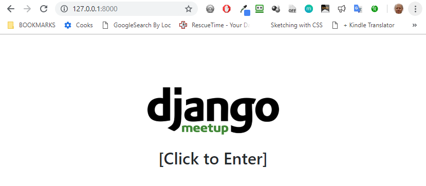

Run The Server¶
Now we’re ready to serve the website by initiating the built-in python server via the following command:
On Linux/Mac:
python manage.py runserver
On Windows:
py manage.py runserver
When you go to the localhost page, ie. http://127.0.0.1:8000/, you should now see the public website for Django Meetup working on your local server.
